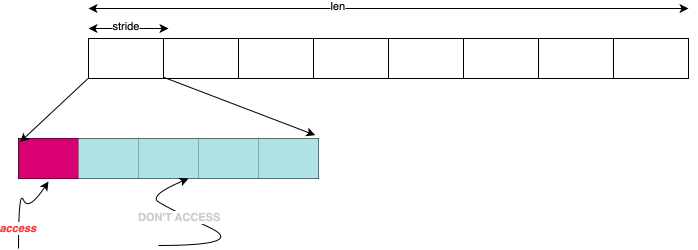
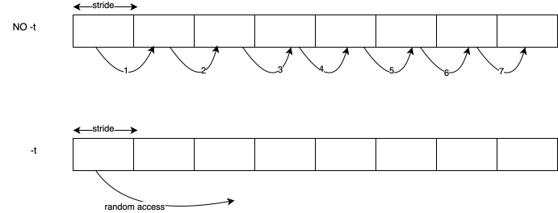

[perftest] lat mem rd
使用方法
整体命令:
1
[-P <parallelism>] [-W <warmup>] [-N <repetitions>] [-t] len [stride...]
参数解释:
- P: 并行运行线程数
- t: 是否连续访问
- W: warmup
- N: repetitions
- len: 访问数据块最大大小(该程序会循环测试，从较小的数据块开始测试，逐步 增加数据块大小，最高达到
len大小) - stride: 访问步长, 可以指定多个步长依次测试
命令示例:
1
numactl -C 0 -m 0 ./bin/x86_64-linux-gnu/lat_mem_rd -P 1 -N 5 -t 1024m 512 1024
解释:
- numactl:
-C 0: 将进程绑定在cpu 0-m 0: 将进程绑定在 NUMA node 0
- lat_mem_rd:
-P 1: 单线程-N 5:-t: 非连续访问1024m: 访问数据块大小为1G512 1024: 访问步长, 命令执行时，会依次测试512,1024两个步长, 得出两组结果 (相当于对不同的步长进行bench test)
输出如下:
1
2
3
4
5
6
7
8
9
10
"stride=512
0.00098 1.413
0.00195 1.413
0.00293 1.413
...
384.00000 88.165
512.00000 88.201
768.00000 88.216
1024.00000 88.219
- 第一列表示访问的数据大小，单位为M
- 第二列表示延迟
具体实现
我们这里，只关注下，两种访存模式(-t or no -t) 的具体实现. 无论是那种模式， 都需要将要访问的内存区域，按照stride 进行分割. 每个分割的区域只访问一个 字节. 如下图所示:

从上图可以看出，在walk每个区域时，只会访问该区域的第一个字节.
而两种访问村模式，只是决定了对这段区域内的访存顺序。
no -t: 连续访问-t: 随机访问(不是真随机, 而是尽量做到两次连续的内存访问，尽量最远(个人理解))

但是，该程序的非连续访问访问是对这段内存的每个range，都要访问一遍，并且不能重复访问。
接下来看下代码细节
代码细节
整体流程
1
2
3
4
5
6
7
8
9
10
11
12
13
14
15
16
17
18
19
20
21
22
23
24
main
## 参数解析时决定其初始化函数
|-> -t: fpInit = thrash_initialize
def: fpInit = stride_initialize
## range表示本轮的访存范围，从LOWER 增长到 len, 也就是例子中配置的
## 1024m
|-> foreach range:
for (range = LOWER; range <= len; range = step(range))
|-> loads()
|-> init struct mem_state
|-> width, len, max_len, line(赋值为stride)
## 表示访问了多少次内存
|-> count = 100 * (state.len / (state.line * 100) + 1)
## 具体访存函数
|-> benchmp()
## 保存最小值
|-> save_minimum()
## gettime 根据保存的时间戳, 计算出本次访问的时间段
## count 表示一轮访问了多少次内存, get_n()表示进行了多少轮访问
## 所以综合来说, result 计算的是，一次访存所消耗的时间
|-> result = (1000. * (double)gettime()) / (double)(count * get_n());
## 打印
|-> fprintf(stderr, "%.5f %.3f\n", range / (1024. * 1024.), result);
其中fpInit, 决定了访问内存的方式，我们主要关注下这部分:
访存方式
首先来看下，比较简单的，顺序访问:
顺序访问
1
2
3
4
5
6
7
8
9
10
11
12
13
14
15
16
17
18
19
20
21
22
void
stride_initialize(iter_t iterations, void* cookie)
{
struct mem_state* state = (struct mem_state*)cookie;
size_t i;
size_t range = state->len;
size_t stride = state->line;
char* addr;
//==(1)==
base_initialize(iterations, cookie);
if (!state->initialized) return;
addr = state->base;
//==(2)==
for (i = stride; i < range; i += stride) {
//该内存存储的是下一个要访问的地址
*(char **)&addr[i - stride] = (char*)&addr[i];
}
*(char **)&addr[i - stride] = (char*)&addr[0];
state->p[0] = addr;
mem_reset();
}
base_initialize, 不再展开，主要调用malloc 分配内存，初始化state中 有关成员例如:- nwords
- addr: 分配内存的首地址
- nlines
- …
为了做到对每个区域的其中一个byte做一次访问(假设有n个区域，尽量做到在一轮 测试中，只访问n次内存， 每次都落在一个range中). 在addr指向的内存区域中 构建一个链表，遍历该链表一次，就做到了对每个range访问一次。
另外，从代码也可以看出来，将每个区域的首地址，串联成一个链表，并且按照该链表 访问，地址单方向递增的。（除了最后一个区域)
非顺序访问
1
2
3
4
5
6
7
8
9
10
11
12
13
14
15
16
17
18
19
20
21
22
23
24
25
26
27
28
29
30
thrash_initialize
## 分配内存
|-> base_initialize()
## 表示len不是按照pagesize对齐
|-> if state->len % state->pagesize:
## nwords 表示 组的个数
|-> state->nwords = state->len / state->line
## 分配一个数组，并计算出具体的链表
## (words[n] 的值为:访问n组之后，要访问的下一个组的具体地址)
|-> state->words = words_initialize(state->nwords, state->line)
|-> words = (size_t*)malloc()
## log2(max)
|-> for (i = max>>1, nbits = 0; i != 0; i >>= 1, nbits++);
## 下面解释
|-> for (i = 0; i < max; ++i) {
/* now reverse the bits */
for (j = 0; j < nbits; j++) {
if (i & (1<<j)) {
words[i] |= (1<<(nbits-j-1));
}
}
words[i] *= scale;
}
|-> for (i = 0; i < state->nwords - 1; ++i)
## 根据上面计算的链表，构造实际的链表
|-> *(char **)&addr[state->words[i]] = (char*)&addr[state->words[i+1]]
|-> *(char **)&addr[state->words[i]] = addr
|-> state->p[0] = addr
--> else
|-> 暂不分析
这里想要实现的效果是，将每个内存访问尽量分散.
我们以 max = 8 为例, 得到的链表是:
1
0->4->2->6->1->5->3->7
而做到这样效果的代码主要是:
1
2
3
for (j = 0; j < nbits; j++)
if (i & (1<<j))
words[i] |= (1<<(nbits-j-1))
这里将数拆分, 并通过nbits-j-1找到最远的值
1
2
3
4
4 = log2(2)
---
n = log2(3-2)
n = 2
具体不知道是哪个算法, 还需要看下具体算法
参考链接
This post is licensed under CC BY 4.0 by the author.